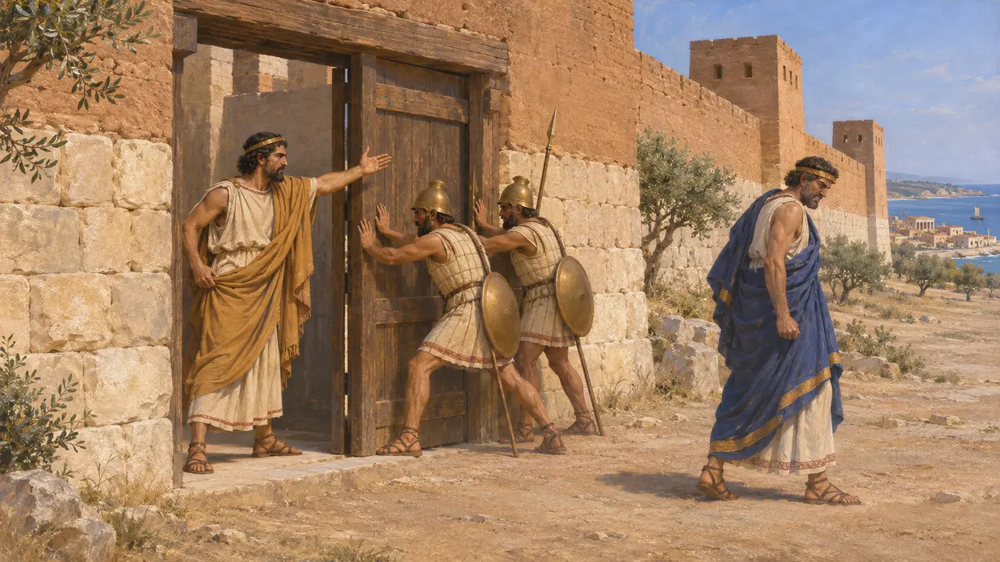
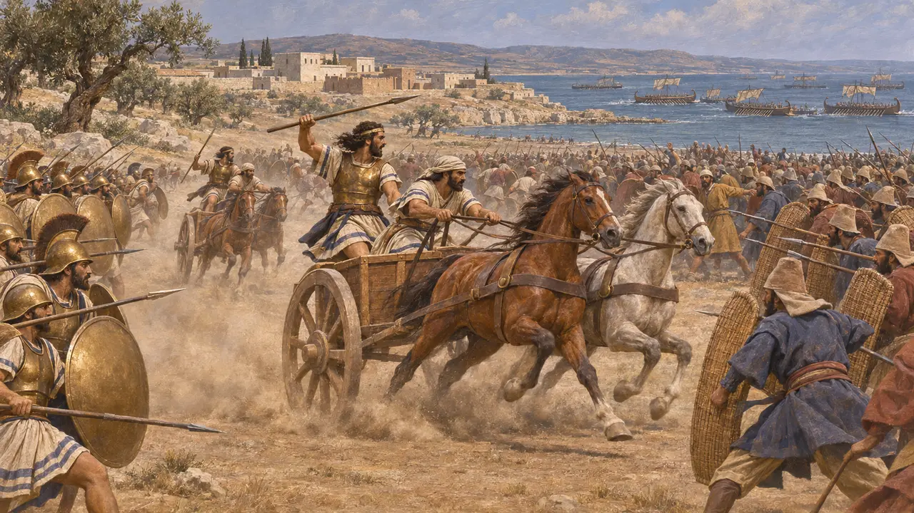
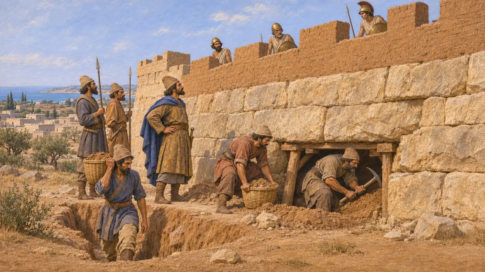
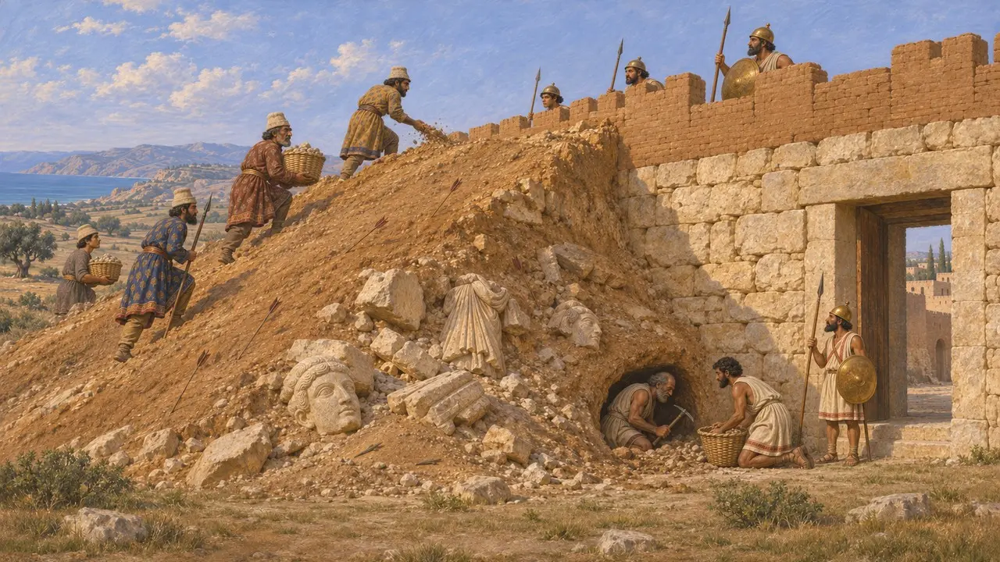

Enciclopedia › Battaglie ed eventi

La rivolta di Cipro
Insurrezione dei regni ciprioti contro Dario durante la rivolta ionica, 498-497 a.C.
Nel gioco: Livello 7: Sardi brucia
Dopo l'incendio di Sardi nel 498 a.C., quasi tutte le città-regno di Cipro si unirono alla rivolta ionica, guidate da Onesilo di Salamina. Un esercito persiano attraversò il mare dalla Cilicia con una flotta fenicia, vinse una battaglia campale presso Salamina e poi prese una dopo l'altra le città ribelli. Erodoto afferma che l'isola fu libera per un solo anno, e la sua perdita indebolì probabilmente la causa ionica a oriente.
Nel gioco: La Cronaca registra Cipro che si unisce alla rivolta e un esercito persiano proveniente dalla Cilicia che la riconquista nel giro di un anno, datato al 497 a.C. Ciò concorda con Erodoto, sebbene l'isola si fosse sollevata nel 498 a.C. e alcuni assedi siano proseguiti dopo la battaglia principale.

Onesilo si impadronisce di Salamina
Racconto anticoErodoto dice che Onesilo, fratello minore del re Gorgo di Salamina, da tempo sollecitava la rivolta contro i Persiani. Quando Gorgo rifiutò, Onesilo lo chiuse fuori dalla città e Gorgo fuggì dalla parte dei Persiani. Tutti i regni ciprioti si unirono allora alla rivolta tranne Amatunte, che Onesilo pose sotto assedio.
Herodotus 5.104

Battaglia per terra e per mare
Racconto anticoErodoto riferisce che il persiano Artibio portò un esercito dalla Cilicia mentre le navi fenicie circumnavigavano l'isola e una flotta ionica giungeva in aiuto dei ribelli. Gli Ioni vinsero in mare, ma sulla terraferma, presso Salamina, Stesenore di Curio passò dalla parte dei Persiani, seguito dai carri salaminii. Onesilo cadde, come cadde Aristocipro, re di Soli. Anche Artibio perse la vita nei combattimenti.
Herodotus 5.108-113

Gli assedi delle città
Racconto anticoErodoto dice che i Salaminii restituirono la loro città a Gorgo, mentre le altre città cipriote furono poste sotto assedio. Appresa la morte di Onesilo, la flotta ionica fece ritorno in patria. Soli resistette più a lungo e cadde nel quinto mese, quando i Persiani scavarono sotto le sue mura. Erodoto conclude dicendo che i Ciprioti erano stati liberi per un anno prima di essere ricondotti sotto il Re.
Herodotus 5.115-116

Il terrapieno d'assedio di Paleopafo
Nelle fontiGli scavi di Kouklia, il sito dell'antica Pafo, hanno portato alla luce un grande terrapieno d'assedio costruito contro le mura della città, vicino alla porta nord-orientale. Il suo riempimento conteneva sculture spezzate e oggetti votivi, e al suo interno e intorno a esso furono trovate centinaia di punte di freccia e altre armi. I difensori scavarono gallerie sotto il terrapieno per farlo crollare. Gli scavatori datano l'assalto alla riconquista persiana del 497 a.C. circa, fornendo una prova materiale di assedi che Erodoto menziona solo in termini generici.
F. G. Maier and V. Karageorghis, Paphos: History and Archaeology, 1984
La testa di Onesilo
Leggenda posterioreErodoto racconta che gli abitanti di Amatunte tagliarono la testa di Onesilo e la appesero sopra la loro porta. Quando le api riempirono di favi il cranio vuoto, un oracolo ordinò loro di seppellire la testa e di offrire ogni anno un sacrificio a Onesilo come a un eroe. Il racconto spiega l'origine di un culto locale ed è costruito come una storia di prodigi più che come una cronaca.
Herodotus 5.114
Fonti
- Herodotus 5.104-116
- F. G. Maier and V. Karageorghis, Paphos: History and Archaeology, 1984
- P. Briant, From Cyrus to Alexander, 2002